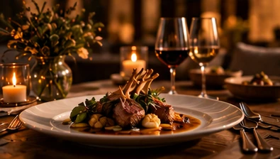
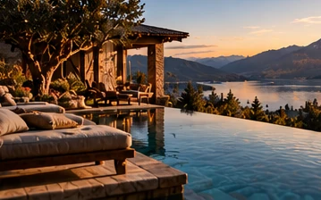
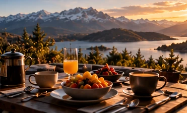
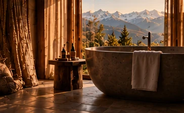

The
Unscheduled
Week
What would happen if you gave yourself seven days?
What if nothing
was expected of you?
You have built a career, a business, perhaps an entire life around responsibility, ambition and achievement. Your days are filled with decisions. People need your attention. Expectations follow you everywhere.
And even when you have the freedom to do almost anything, finding the space to consider what you actually want can be surprisingly difficult.
Seven days.
Entirely yours.
The Unscheduled Week is an exceptionally private, one-to-one experience for individuals seeking something increasingly difficult to find: uninterrupted time, complete discretion and an independent mind to think alongside their own.
For seven days, you have my exclusive professional attention. No other participants. No workshops, prescribed exercises or predetermined outcomes.
We might spend hours in conversation, walk through extraordinary landscapes, ride horses, share meals or simply enjoy the luxury of having nothing scheduled.
Some conversations may be about ambition and achievement. Others about relationships, personal choices, freedom, identity or what comes next. And sometimes, there may be no particular question to answer at all.
This is not a conventional retreat. It is not therapy, business consulting or a coaching programme. It is seven days with someone who has no agenda for your life but to help you explore your own.
Room to enjoy
the extraordinary.
Unhurried dinners. A morning with nowhere to be. A view worth sitting with. The week unfolds at your pace.




A world away
from the ordinary.
Perhaps the vast open landscapes of Patagonia. A secluded ranch in Montana. Or a quiet Himalayan lodge in the green hills of Nepal. The setting is yours to choose — these are simply places to imagine what distance, privacy and perspective might feel like.
Destinations are illustrative, not fixed locations or included travel packages. All arrangements are agreed individually.
One person.
One week.
Your own pace.
Throughout the week, I am there as your independent thinking partner — for conversations, shared experiences and the moments in between.
There is no fixed schedule, no expectation to arrive with a problem and no requirement to leave with a particular answer.
The experience is shaped around your interests, your pace and the kind of space you want to create. Exclusive availability does not mean constant activity: rest, privacy and personal boundaries are agreed together in advance.
Every engagement begins with a confidential conversation to explore expectations and whether spending a week together would be mutually beneficial.
Kristin Grube
My perspective draws on an international career in senior management, years spent living and working across cultures, and approximately fifteen years playing and coaching competitive polo.
Both business and sport have taught me how differently people think under pressure — and how valuable an independent perspective can become when the usual expectations fall away.
My work today is private executive advisory: an ongoing, confidential thinking partnership focused on the person behind the professional role.
A week that
belongs to you.
Seven consecutive days of exclusive, one-to-one private executive advisory.
Travel, accommodation, dining and additional experiences are arranged separately and are not included in the advisory fee.
Availability is intentionally limited to a small number of private engagements each year.
Every experience begins with a private introductory conversation.
Request a private conversation ↗